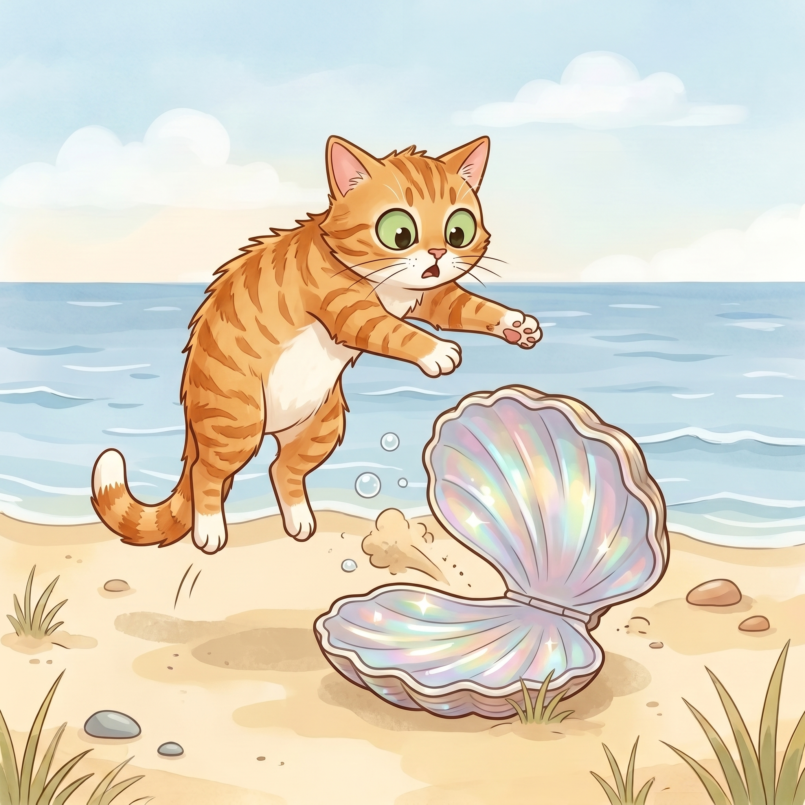

Step 1 · Say the Blend
cl
c and l slide together, like clam.
clam
clap
close
Read cl words. Then read one tiny story.

c and l slide together, like clam.
Beach Cat saw a clam.
The clam was closed.
Beach Cat gave a clap.
The clam opened.
Beach Cat jumped back.
You read cl words like clam, clap, and closed.
That blend has two sounds sliding together.
If it still feels fun, read the story one more time.